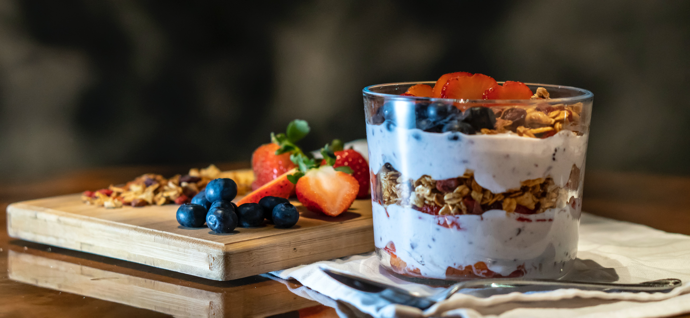
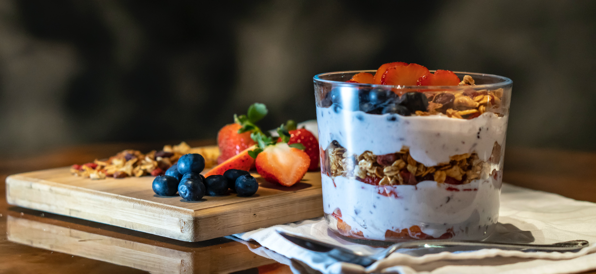

Hello! My name is Jacob Blockey, I am a fresh graduate of Computer science with an associates degree
from North Hennepin Community College, which is located in Brooklyn Park Minnesota. Throughout my time in
college I had the stereotypical College Kid diet. Which consists of a lot of frozen foods that you just throw
in the microwave, fast food, or ramen noodles. Now that I'm out of college I want to try to start eating more healthy foods.
That's when I found this parfait recipe online and thought it looked delicious! I hope you enjoy.
 
